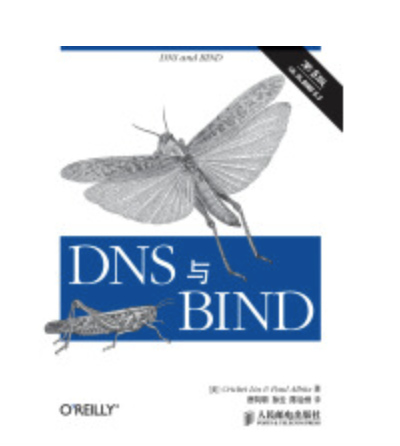
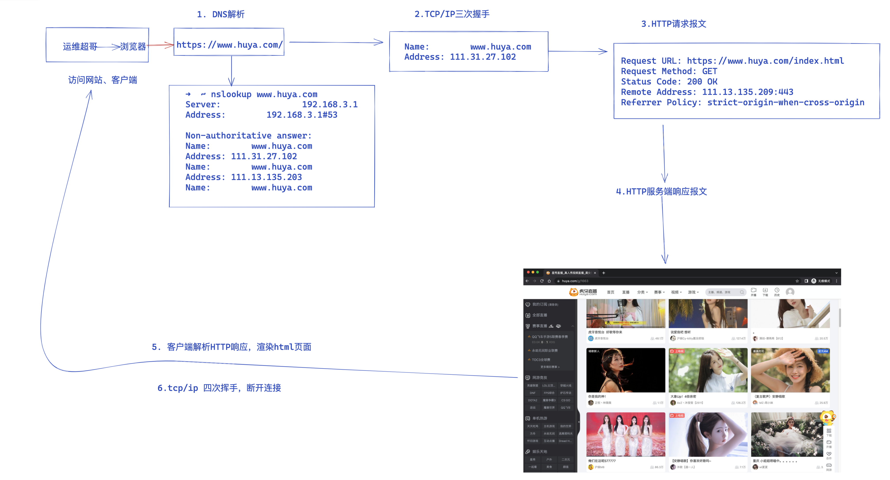
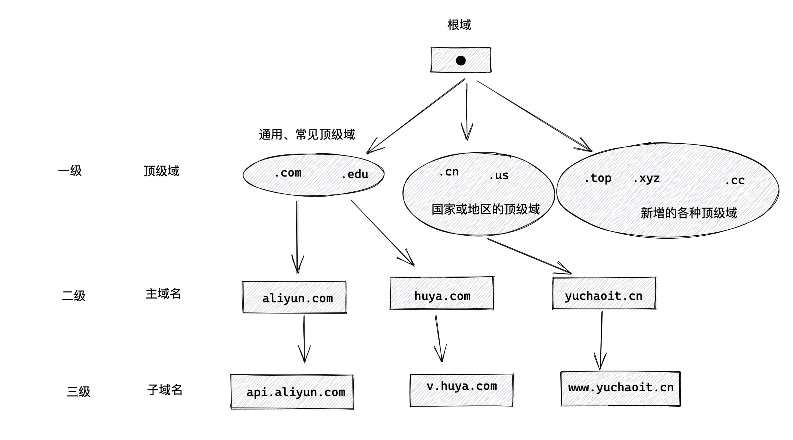
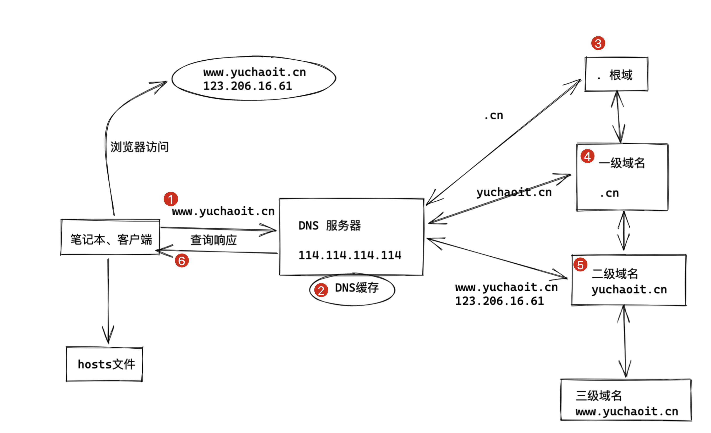
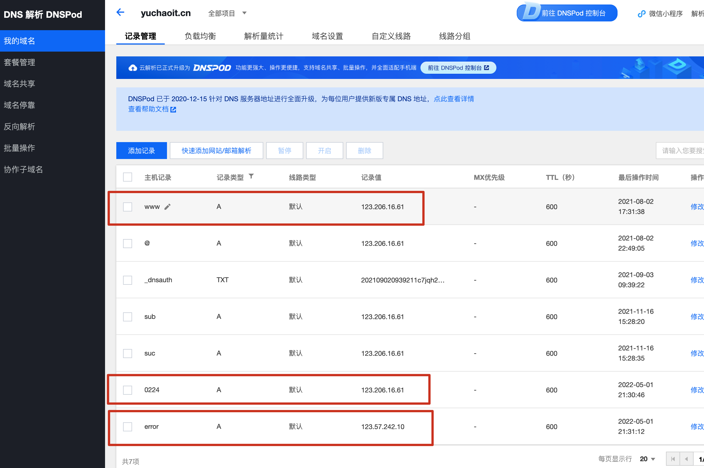

20-用户访问网站原理
接下来一个大环节，就是学习网站的所有知识点了
用户访问网站，主要分两大块知识点
- 客户端输入www.yuchaoit.cn后，是如何看到网页的，其中原理流程
- 服务端是如何提供网站服务的？其中原理流程
浏览器输入网址后发生了什么
这是一个经典的问题，通过回答的细致程度，可以判断出，小白、新手、中级玩家、高端玩家。
关于这个问题，小到三两句话，大到你用三个月都说不完的知识点，知识深似海。
经典书籍推荐
关于这个问题，想要深入细致了解，可以看如下经典书籍
- dns

- tcp/ip
- http协议
- http权威指南
当然，超哥将自己毕生所学，所有的功力，取其精华，给大家提供了如下知识点，让小白能尽快的掌握其中重点，更大的世界，还需要你们自己探索，超哥只能先给你带上这趟IT的高速列车。
知识点框架（面试前拿出来背）

总体知识大体分为6个步骤，每一个步骤可以详细的拆开来说。
1.梳理用户访问网站流程
0.客户端 确保你的机器可以上外网
1.客户端 浏览器输入网站url，点击回车 www.yuchaoit.cn
2.客户端 本地进行dns域名查找、查找域名对应的ip地址
3.客户端 直接访问该服务器的ip，开始tcp三次握手过程
4.客户端 建立tcp连接后，发起http请求，构造请求报文，会发出多次请求
5.服务端 接收到http请求后，解析请求，响应请求，回复多次
6.客户端 浏览器看到响应内容，浏览器解析响应数据，渲染结果在屏幕上
7.客户端 结束访问，关闭网站，完成tcp四次挥手

2.抓技术名词关键字
1.域名
2.域名解析
3.TCP/IP 三次握手
4.TCP/IP 四次挥手
5.HTTP请求发出
6.HTTP响应报文
1.DNS域名解析
DNS细节知识请看博客
http://apecome.com:9494/03%E7%B3%BB%E7%BB%9F%E6%9C%8D%E5%8A%A1%E7%AF%87/3-9-%E5%9F%9F%E5%90%8D%E7%AE%A1%E7%90%86%E7%B3%BB%E7%BB%9F%E4%B9%8BDNS.html#%E9%83%A8%E7%BD%B2%E5%8F%8D%E5%90%91%E8%A7%A3%E6%9E%90
1.DNS域名结构
由于互联网中的域名太多，全球的用户也太多，因特网的域名采用的是树状结构命名。 任何一个连接到网络中的机器，都有一个唯一的层次结构名字，叫做域名（domain name）。
- 域、就是名字空间中可被划分、管理的部分。
- 语法上要求，域名由标号（label）组成，每一个label之间通过小数点隔开。
- 域名可以被分为多个子域，子域还可以继续划分子域的子域，因此形成了
- 顶级域
- 主域名
- 子域名

根域 .
- 在整个 DNS 系统的最上方一定是 . (小数点) 这个 DNS 服务器 (称为 root)，也叫”根域“。
- 根域 （13台 全世界只有13台。1个为主根服务器，放置在美国。其余12个均为辅根服务器，其中9个放置在美国，欧洲2个，位于英国和瑞典，亚洲1个，位于日本。）
顶级域名（一级域名）
顶级域名是域名的最后一个部分，即是域名最后一点之后的字母，例如在http://yuchaoit.cn这个域名中，顶级域是.cn（或.COM），大小写视为相同。%2C-iq1hk5rmsf9xnujhg63fqf5b./)
二级域名
二级域名是域名的倒数第二个部分，例如在http://yuchaoit.cn这个域名中，二级域名是yuchaoit。以此类推。
三级域名
子域名
域名机构
收费、新网https://www.xinnet.com/、万网https://www.hichina.com/
免费域名、tk域名等。
2. DNS服务器分层结构（DNS解析流程）
域名是分层结构，域名服务器也是分层结构，域名服务器其实就是一台部署了DNS域名解析系统的计算机，对外提供解析服务。
主要涉及的四个DNS服务器如下
| 分类 | 作用 |
|---|---|
| 根DNS服务器 | 读作root nameserver。当本地域名服务器在本地找不到解析记录时，第一步来这里找，能够拿到顶级域名服务器的信息。 |
| 顶级域名服务器 | 读作，top level domain nameserver(tld)。负责管理顶级域名下注册的二级域名。如当你访问www.yuchaoit.cn，首先找到顶级域名服务器.cn，然后找到二级域名yuchaoit.cn所在的权威域名服务器地址。 |
| 权威域名服务器 | 读作authoritative nameserver。维护该区域内的域名和ip之间的解析关系，也就是我们常见的如阿里云域名注册商，或是腾讯域名注册商。 |
| 本地域名服务器 | 读作local DNS或是DNS resolver。也就是用户本机自动获取的DNS地址，或是运营商提供的DNS，或是阿里、腾讯公共DNS服务器等。 |

文字描述DNS解析流程
DNS域名解析
浏览器客户端需要正确查询、解析出域名的的ip地址，才能建立与服务器的连接
1.浏览器需要解析域名，首先查看本地的hosts文件，查看是否有固定的解析规则，有则直接使用该ip信息
2.本地的hosts文件没有解析关系，浏览器会发出一个dns请求到本地设置的dns服务器
本地dns服务器一般默认会是你接入的网络运营商，如电信dns，移动dns
3.域名解析的请求到达dns服务器之后，dns服务器优先查找它自己的缓存记录，如果有直接返回结果
如果dns服务器本地没有结果，递归的向上查找DNS根服务器，是否有解析记录。
4.根DNS服务器的作用只是提供域服务器的地址（不提供域名和ip的关系解析）
5.本地dns服务器此时向域服务器继续发出请求，此时请求的服务器就是如.com .cn这样的域服务器了
域服务器也不会直接返回你要访问的域名、以及它对应的IP地址的关系，而是告诉本地dns服务器，该域名对应的解析服务器的地址，
如163.com
6.最后本地dns服务器，向该域名对应的解析服务器发出请求，此时才能正确的拿到该域名对应的ip地址关系
此时本地dns服务器会把ip告诉浏览器
以及这个域名、ip的对应关系会被存储在本地缓存中，便于下次访问，可以直接看到这个域名、ip的对应关系，加速访问
3. DNS专业名词
递归查询
就好比我们递归创建文件夹一样
mkdir -p /opt/linux/0224/chaoge666.log
1.我们本地进行域名解析时，如ping baidu.com，本地的/etc/resolv.conf指定的服务器接收到用户请求，必须返回给用户一个精准的ip结果。
2.如果指定的DNS服务器没有存储这个解析关系，就会以上述于超老师讲解的dns解析流程，开始向根域服务器发出请求，因此反复循环，直到拿到结果。
迭代查询
也就是DNS服务器/etc/resolv.conf没有直接返回查询域名-ip的对应结果，而是告诉另外一台服务器，另外一台服务器，再去请求另外一台机器，反复发请求，直到获取正确结果。
DNS缓存
指的是将域名、ip的解析关系存储在离用户最近的一个客户端上，这个位置可以是任意的地方，目的都是为了减少递归查询的次数，更快的获取查询结果。
TTL值
英文名 time to live
告诉本地dns服务器，该解析记录的可用时长，到期后本地缓存会自动删除该解析关系，重新发起迭代/递归查询，获取新的域名、ip解析结果。
4. dig命令查看解析关系
使用dig命令，可以验证上述的原理流程。
yum install bind-utils -y
使用dig命令追踪域名解析全流程
1.首先确定本地dns服务器
[root@master-61 /etc/ansible/roles]#cat /etc/resolv.conf
# Generated by NetworkManager
nameserver 223.5.5.5
dig追踪解析
[root@master-61 /etc/ansible/roles]#dig +trace www.yuchaoit.cn
; <<>> DiG 9.11.4-P2-RedHat-9.11.4-26.P2.el7_9.9 <<>> +trace www.yuchaoit.cn
;; global options: +cmd
. 2974 IN NS d.root-servers.net.
. 2974 IN NS b.root-servers.net.
. 2974 IN NS l.root-servers.net.
. 2974 IN NS e.root-servers.net.
. 2974 IN NS a.root-servers.net.
. 2974 IN NS k.root-servers.net.
. 2974 IN NS g.root-servers.net.
. 2974 IN NS i.root-servers.net.
. 2974 IN NS j.root-servers.net.
. 2974 IN NS h.root-servers.net.
. 2974 IN NS f.root-servers.net.
. 2974 IN NS m.root-servers.net.
. 2974 IN NS c.root-servers.net.
;; Received 228 bytes from 223.5.5.5#53(223.5.5.5) in 14 ms
cn. 172800 IN NS d.dns.cn.
cn. 172800 IN NS ns.cernet.net.
cn. 172800 IN NS c.dns.cn.
cn. 172800 IN NS a.dns.cn.
cn. 172800 IN NS b.dns.cn.
cn. 172800 IN NS f.dns.cn.
cn. 172800 IN NS e.dns.cn.
cn. 172800 IN NS g.dns.cn.
cn. 86400 IN DS 57724 8 2 5D0423633EB24A499BE78AA22D1C0C9BA36218FF49FD95A4CDF1A4AD 97C67044
cn. 86400 IN RRSIG DS 8 1 86400 20220514050000 20220501040000 47671 . nAeYXDNUTAmlFxLfXot6fdnx05UZ/KU4cj1cy3zU5rrGBh2qFLrPGNQr 8QpZU2vPoydZZZSzcRT6vpyaFGPJhAGsqi+cs2JOMMZNQYlkKdxO3Q3D x9yLXJOVAnnH6iGWglIVnonFsgtcNqGjSeJ/Th9tHbOMD+n/6cumezNy 1HOGrFW1dYQ9lfHjbnxox8EMmGKQ3nejtjIVS9GvHCBp3uisQdDTCook f+MT7qN9P86QJqtgDO+GctD90KIA4u311RQM+tBk9YDEMqXxPcsSiD98 bArR/hUpvnRRbU2t2mk6cmv7ZVAy3ofv6u1fMiwS6YzXneb1i8kLtoUQ zOoqNQ==
;; Received 706 bytes from 192.33.4.12#53(c.root-servers.net) in 1109 ms
yuchaoit.cn. 86400 IN NS net.dnspod.net.
yuchaoit.cn. 86400 IN NS tulip.dnspod.net.
3QDAQA092EE5BELP64A74EBNB8J53D7E.cn. 21600 IN NSEC3 1 1 10 AEF123AB 3QHKTF6LTFG8AAFUUAJSR8RVAJP99SFU NS SOA RRSIG DNSKEY NSEC3PARAM
3QDAQA092EE5BELP64A74EBNB8J53D7E.cn. 21600 IN RRSIG NSEC3 8 2 21600 20220513133757 20220413130511 38388 cn. g+AhBfqp/RPdA6q61n4JFsO24Go4jkNZYEyTjW0nezf+wN+jj1N9CN87 sBDEwljwudxVhyjHBODdZTdlV0ZSyMYUvgZXfoIh90AR/bu8kzDhUdq+ wVdMye86MQts52L9oZq+SBywnYjW6MwJwkaPwtqoGUzit1xi0DogjaRB T8I=
QJ2D47AGKKDJ0JBA02ILNHBNVEF3DQUS.cn. 21600 IN NSEC3 1 1 10 AEF123AB QK2TQPG7N1M4FC702TM02B2P08FPDJN0 NS DS RRSIG
QJ2D47AGKKDJ0JBA02ILNHBNVEF3DQUS.cn. 21600 IN RRSIG NSEC3 8 2 21600 20220513132930 20220413130455 38388 cn. UBB5On9znmA5pY7aGkeL8Aa31+fkgq82ruaLZUwike9Pbdr4WbiYFjpH IhGz4mijkCeNwWm+bNPA0TtzpL10lVDJp4Zo0DEKQD8NBejGFHQUpY/d BZvG15tM6rXY6I0NjgKa/7d8zyrV4jgZn+r8qJadps3ixLUPZPypbsX+ t7I=
;; Received 583 bytes from 203.119.25.1#53(a.dns.cn) in 12 ms
www.yuchaoit.cn. 600 IN A 123.206.16.61
yuchaoit.cn. 86400 IN NS net.dnspod.net.
yuchaoit.cn. 86400 IN NS tulip.dnspod.net.
;; Received 118 bytes from 58.247.212.48#53(tulip.dnspod.net) in 33 ms
解析
1.先去找了13个根域服务器，没有排序关系
2.然后确认顶级域的范围，是.cn
3.然后确认权威域名服务器地址net.dnspod.net
4.最后通过权威域名服务器拿到域名、ip的解析关系
www.yuchaoit.cn. 600 IN A 123.206.16.61
yuchaoit.cn. 86400 IN NS net.dnspod.net.
yuchaoit.cn. 86400 IN NS tulip.dnspod.net.
5.可以看一看云解析DNS的手册
https://help.aliyun.com/document_detail/102237.html
6.阿里云DNS解析
https://help.aliyun.com/document_detail/29716.html
7.腾讯云DNS解析
https://cloud.tencent.com/document/product/302/3446
各记录类型使用目的
具体说明文档
https://cloud.tencent.com/document/product/302/38661
| 记录类型 | 使用目的 |
|---|---|
| A 记录 | 将域名指向一个 IP 地址（外网地址）。 |
| CNAME 记录 | 将域名指向另一个域名，再由另一个域名提供 IP 地址（外网地址）。 |
| MX 记录 | 设置邮箱，让邮箱能收到邮件。 |
| NS 记录 | 将子域名交给其他 DNS 服务商解析。 |
| AAAA 记录 | 将域名指向一个 IPv6 地址。 |
| SRV 记录 | 用来标识某台服务器使用了某个服务，常见于微软系统的目录管理。 |
| TXT 记录 | 对域名进行标识和说明，绝大多数的 TXT 记录是用来做 SPF 记录（反垃圾邮件）。 |
| 隐、显性 URL 记录 | 将一个域名指向另外一个已经存在的站点。 |
工作中经常需要加的记录类型
主机记录指的就是，主域名的前缀，通常会添加如下记录类型
- www，如解析为www.yuchaoit.cn，或者www.taobao.com
- @，直接解析主域名，如yuchaoit.cn，或taobao.com
- ，泛解析，匹配其他所有子域名，如`.yuchaoit.cn`
- 一般适用于给域名绑定证书，一张证书，绑定
*.yuchaoit.cn，也就可以处理如 - www.yuchaoit.cn
- api.yuchaoit.cn
- blog.yuchaoit.cn
- ...
- 一般适用于给域名绑定证书，一张证书，绑定
- mail，mail.yuchaoit.cn，一般用于邮件服务器的绑定
- 移动端网址，如
https://m.huya.com/
8.实践添加腾讯云dns解析
https://console.cloud.tencent.com/cns
最常用的就是添加A记录
➜ ~ dig +trace 0224.yuchaoit.cn

9.域名需要备案
https://beian.aliyun.com/ 阿里云
https://cloud.tencent.com/product/ba 腾讯云
2.DNS服务搭建
主流的dns服务器部署，有两种工具
- bind（大型公司需要自建复杂的域名解析系统，存储解析记录，包括了设置根域、顶级域、二级域等区域功能）
- dnsmasq（轻量级域名系统，提供域名、ip的对应解析关系，需要提供上游权威dns服务器地址）
1. bind服务部署
DNS 的==域名解析==都是 ==udp/53== ；主从之间的==数据传输==默认使用==tcp/53==；
DNS软件：
==Bind==是一款开放源码的DNS服务器软件，Bind由美国加州大学Berkeley（伯克利）分校开发和维护的，全名为Berkeley Internet Name Domain它是目前世界上使用最为广泛的DNS服务器软件，支持各种unix平台和windows平台。
BIND现在由互联网系统协会（Internet Systems Consortium）负责开发与维护。
2.机器准备
172.16.1.61 dns服务端
172.16.1.7 dns客户端 web-server
172.16.1.8 dns客户端 web-server
3.部署bind（61机器）
yum install bind bind-utils -y
解释
bind-utils：bind客户端程序集，例如dig, host, nslookup等；
bind：提供的dns server程序、以及几个常用的测试程序；
bind-libs：被bind和bind-utils包中的程序共同用到的库文件；
操作全流程
1.关闭防火墙
[root@dns-server ~]# systemctl stop firewalld
[root@dns-server ~]#
[root@dns-server ~]# iptables -F
[root@dns-server ~]#
[root@dns-server ~]# getenforce
Disabled
2.配置yum源，用于安装bind软件。
[root@dns-server ~]# ls /etc/yum.repos.d/
3.安装bind
[root@dns-server ~]# yum install bind -y
4.查看软件
[root@dns-server ~]# rpm -qi bind
5.查看dns配置文件
[root@dns-server ~]# rpm -ql bind
# 日志轮转文件
/etc/logrotate.d/named
# 配置文件目录
/etc/named
# 主配置文件
/etc/named.conf
# zone文件,定义域
/etc/named.rfc1912.zones
# 服务管理脚本
/usr/lib/systemd/system/named.service
# 二进制程序文件
/usr/sbin/named
# 检测配置文件
/usr/sbin/named-checkconf
# 检测域文件
/usr/sbin/named-checkzone
# 根域服务器
/var/named/named.ca
# 正向解析区域文件模板
/var/named/named.localhost
# 反向解析区域文件模板
/var/named/named.loopback
# dns服务器下载文件的默认路径
/var/named/slaves
# 进程pid
/var/rum/named
4.配置文件修改设置dns区域文件
named.conf修改
1.备份原有文件
[root@dns-server ~]# cp /etc/named.conf /etc/named.conf.bak
[root@dns-server ~]#
[root@dns-server ~]#
[root@dns-server ~]# cp /etc/named.rfc1912.zones /etc/named.rfc1912.zones.bak
2.修改主配置文件
# 定义监听端口、监听方式、允许查询来源
options {
// 定义监听方式 any代表全网监听
// 监听的地址和端口，localhost表示监听在本机所有地址上；
listen-on port 53 { 127.0.0.1;any; };
listen-on-v6 port 53 { ::1; };
// 区域数据库文件存放的目录，存放解析记录的目录
directory "/var/named";
// dns解析过内容的缓存文件
dump-file "/var/named/data/cache_dump.db";
// 静态解析文件（几乎不用）
statistics-file "/var/named/data/named_stats.txt";
// 内存的统计信息
memstatistics-file "/var/named/data/named_mem_stats.txt";
recursing-file "/var/named/data/named.recursing";
secroots-file "/var/named/data/named.secroots";
// 允许谁向本台DNS发起查询请求（localhost|ip|any）；
allow-query { localhost;any; };
..
...
...
省略
// 控制日志输出级别，路径
logging {
channel default_debug {
file "data/named.run";
severity dynamic;
};
};
// 区域设置，这是根域。
zone "." IN {
type hint;
file "named.ca";
};
59 include "/etc/named.rfc1912.zones"; // 这里include表示，载入一个子配置文件
60 include "/etc/named.root.key";
配置文件解析
主配置文件组成部分：：
options {} ：全局选项（监听端口、数据文件存储位置、缓存位置、权限等）
logging {} ：服务日志选项
zone . {} ：自定义区域配置
include ：包含其他的文件
主配置文件注意事项
语法非常严格；
文件权限属主 root ，属组 named ，文件权限 640；
[root@dns-server ~]# ll /etc/named.conf
-rw-r----- 1 root named 1812 Feb 19 17:10 /etc/named.conf
/etc/named.rfc1912.zones 修改
在named.conf中写入全局设置；
在include的配置文件中写入具体的dns解析设置，域名解析记录；
3.修改子配置文件，自定义区域配置文件
配置解析
zone "example.com" IN {
type master|slave;
#自定义区域类型
file /path/to/zonefile;
#绝对路径和相对路径
allow-update {ip|none};
#允许哪个ip可以使用nsupdate动态更新 区域文件
};
添加如下配置，注意格式，这里就是添加你的域名了。 一定不要落下分号
[root@dns-server ~]# tail -5 /etc/named.rfc1912.zones
zone "yuchaoit.cn" IN {
type master;
file "yuchaoit.cn.zone";
allow-update { none; };
};
4.创建zone区域文件 yuchaoit.cn.zone，先去复制一个模板，区域文件放在了/var/named
[root@dns-server ~]# cp -p /var/named/named.localhost /var/named/yuchaoit.cn.zone
5.修改区域文件
让这个域名和你要的IP地址对应起来，以及添加一个三级域名www.yuchaoit.cn。
[root@dns-server ~]# cat /var/named/yuchaoit.cn.zone
$TTL 1D
@ IN SOA @ rname.invalid. (
0 ; serial
1D ; refresh
1H ; retry
1W ; expire
3H ) ; minimum
NS @
A 192.168.0.105
AAAA ::1
www A 192.168.0.105
6.修改完了后，务必修改zone文件的权限
[root@dns-server ~]# chmod 640 yuchaoit.cn.zone
[root@dns-server ~]# ll /var/named/
total 20
drwxrwx--- 2 named named 6 Nov 25 00:38 data
drwxrwx--- 2 named named 6 Nov 25 00:38 dynamic
-rw-r----- 1 root named 2253 Apr 5 2018 named.ca
-rw-r----- 1 root named 152 Dec 15 2009 named.empty
-rw-r----- 1 root named 152 Jun 21 2007 named.localhost
-rw-r----- 1 root named 168 Dec 15 2009 named.loopback
drwxrwx--- 2 named named 6 Nov 25 00:38 slaves
-rw-r----- 1 root named 173 Feb 19 17:58 yuchaoit.cn.zone
7.检查配置文件语法，不要有任何错误
[root@dns-server ~]# named-checkconf /etc/named.conf
[root@dns-server ~]# named-checkconf /etc/named.rfc1912.zones
[root@dns-server ~]#
8.启动named域名解析服务，注意名字是这个。
[root@dns-server ~]# netstat -tnlp|grep named
[root@dns-server ~]#
[root@dns-server ~]# systemctl start named
[root@dns-server ~]# netstat -tnlp|grep named
tcp 0 0 10.96.0.177:53 0.0.0.0:* LISTEN 8051/named
tcp 0 0 192.168.0.104:53 0.0.0.0:* LISTEN 8051/named
tcp 0 0 127.0.0.1:53 0.0.0.0:* LISTEN 8051/named
tcp 0 0 127.0.0.1:953 0.0.0.0:* LISTEN 8051/named
tcp6 0 0 ::1:53 :::* LISTEN 8051/named
tcp6 0 0 ::1:953 :::* LISTEN 8051/named
[root@dns-server ~]#
备注：关于zone file区域档案的参数解释
http://dns-learning.twnic.net.tw/bind/intro6.html#cb
关于zone文件语法解析
time to live（TTL），ttl值主要是控制域名指向的ip地址在dns服务器上的缓存时间
@ 指的就是yuchaoit.cn
$TTL 1D //定义一个TTL默认值为1天,下面数据直接引用此值.
@ [TTL] IN SOA 主DNS服务器FQDN 管理员邮箱 (
0 ; 序列号
1D ; 更新间隔
1H ; 更新失败后重试间隔
1W ; 过期时长
3H ) ; 否定记录保存时长
资源类型：A（IPv4）, AAAA（IPv6）：定义FQDN的IP
NS ： 定义DNS服务器的FQDN
SOA : 起始授权（每个zone首先要定义此值）
MX： 定义邮件记录，有优先级概念（0-99），值越小优先级越高。
CNAME: 定义别名
PTR： 反向记录
5.客户端设置dns服务器地址
测试域名
1.客户端配置我们自己部署的dns服务器地址，写入配置文件，这个192.168.0.104是超哥部署的dns服务器IP。
[root@web-server ~]# cat /etc/resolv.conf
# Generated by NetworkManager
nameserver 192.168.0.104
2.检查解析关系
[root@web-server ~]# nslookup www.yuchaoit.cn
Server: 192.168.0.104
Address: 192.168.0.104#53
Name: www.yuchaoit.cn
Address: 192.168.0.105
3.修改dns服务器地址试试，看看解析关系
3.作业，添加dns记录
现在你有2台web-7，web-8机器，分别需要购买新域名，请在dns服务器上添加如下域名
二级域名
0224web7.cn 172.16.1.7
0224web8.cn 172.16.1.8
三级域名
www.0224web7.cn 172.16.1.7
www.0224web8.cn 172.16.1.8
提示
1./etc/named.rfc1912.zones
2.0224web7.cn.zone
3.systemctl reload named
4.轻量级dnsmasq服务
1、dnsmasq是一款小巧且方便地用于配置DNS服务器和DHCP服务器的工具，适用于小型网络，它提供了DNS解析功能和可选择的DHCP功能。
2、dnsmasq可以解决小范围的dns查询问题，如果业务是跨机房、跨地区的话不建议使用dnsmasq做为dns解析服务器。
1.部署dnsmasq
1.安装
yum install dnsmasq -y
2.修改配置文件
[root@master-61 ~]#ll /etc/dnsmasq.conf
-rw-r--r-- 1 root root 26832 Jul 21 2021 /etc/dnsmasq.conf
修改为如下
[root@master-61 ~]#grep -Ev '^$|^[#;]' /etc/dnsmasq.conf
#定义dnsmasq从哪里获取上游DNS服务器的地址，默认是从/etc/resolv.conf获取
resolv-file=/etc/resolv.dnsmasq.conf
#定义dnsmasq监听的地址，默认是监控本机的所有网卡上。局域网内主机若要使用dnsmasq服务时，指定本机的IP地址
listen-address=172.16.1.61
# 本地域名配置文件（不支持泛域名），添加内部需要解析的地址和域名（重新加载即可生效）
# 默认读取/etc/hosts
addn-hosts=/etc/dnsmasq.hosts
#记录dns查询日志服务器
log-queries
log-facility=/var/log/dnsmasq.log
#包含其他文件夹下所有配置文件
conf-dir=/etc/dnsmasq.d,.rpmnew,.rpmsave,.rpmorig
2.添加上游dns服务器
[root@master-61 ~]#cat /etc/resolv.dnsmasq.conf
nameserver 223.5.5.5
nameserver 223.6.6.6
3.添加dns解析记录
[root@master-61 ~]#cat /etc/dnsmasq.hosts
172.16.1.8 0224web8.cn
172.16.1.9 0224web9.cn
4.启动dnsmasq
[root@master-61 ~]#systemctl start dnsmasq
5.测试局域dns记录
1.使用公网dns查询记录
[root@web-8 ~]#nslookup 0224web9.cn 223.5.5.5
Server: 223.5.5.5
Address: 223.5.5.5#53
** server can't find 0224web9.cn: NXDOMAIN
2.使用本地dns服务器查询
[root@web-8 ~]#nslookup 0224web9.cn
Server: 172.16.1.61
Address: 172.16.1.61#53
Name: 0224web9.cn
Address: 172.16.1.9
6.小结
- 部署dns服务器，添加dns解析记录（ip、域名对应关系）
- 客户端需要指定dns服务器，方可使用这些记录
- dns查询流程，还有上游服务器提供公网dns记录。